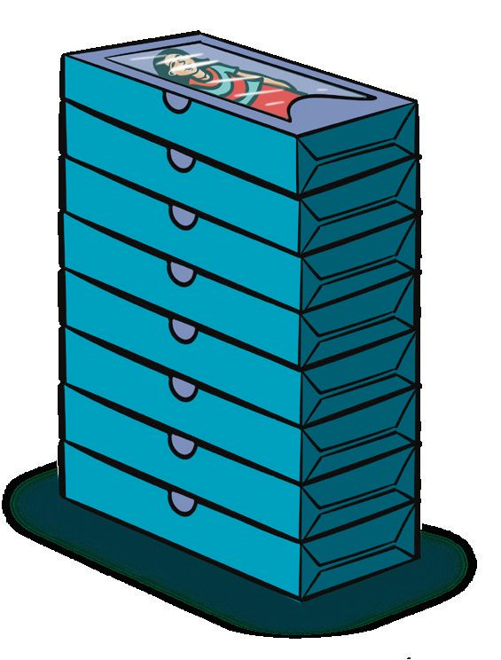
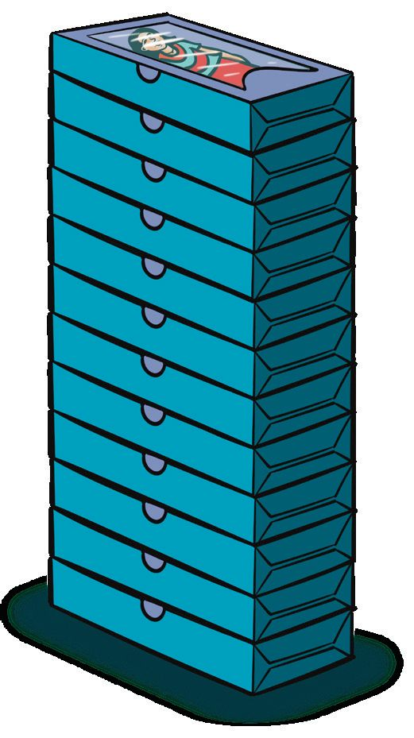
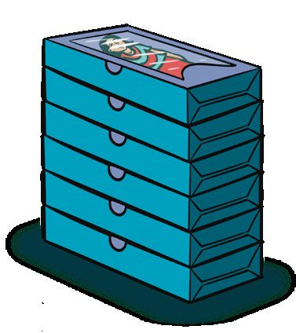
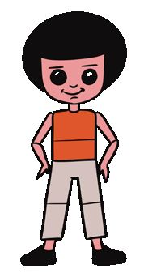
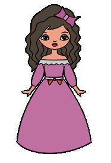
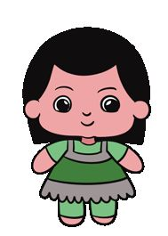
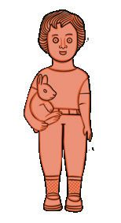
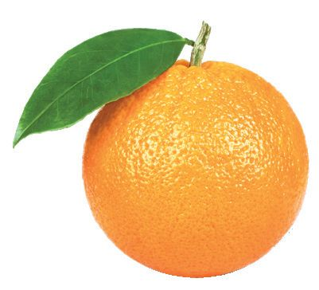

164
Page 68


Page 69


10
പാവ വേണോോ...പാവ
പാവക്കച്ചവടം കഴിഞ്ഞ് സെബിയും ജോോജിയും വീട്ടിലേക്ക് മടങ്ങി. അതെ. കൊൊണ്ടുപോോയതിൽ പകുതിയെണ്ണം വിറ്റു. 10 എണ്ണം ഇനി ബാക്കിയുണ്ട്.
ഇന്നത്തെ കച്ചവടം മോാശമില്ല.
എത്ര പാവകളാണ് വിൽക്കാനായി കൊൊണ്ടുപോോയത് ? എങ്ങനെ കണക്കാക്കി ? പറയൂ. 165
Page 70


കുറെയധികം പാവകൾ ഉണ്ടാക്കണം.
രണ്ട് ദിവസം കഴിഞ്ഞാൽ പൂരമല്ലേ?
പറ്റുമോോ?
ഞങ്ങളുംം കൂടാം. അവർ 2 ദിവസവും ഉണ്ടാക്കിയ പാവകൾ നോോക്കൂ. ഒന്നാം ദിവസം സെബി 12, ജോോജി 6 ആകെ എത്ര പാവകൾ ഉണ്ടാക്കി ? 12 +
6
=
10 +
2
=
10 +
8
+
6
+ 10 +
1
= 18
രണ്ടാം ദിവസം സെബി 7, ജോോജി 11 ആകെ എത്ര പാവകൾ ? 7
166
+ 11 =
7
=
10 +
=
18
8
Page 71


ഞാൻ ചെയ്തത് ഇങ്ങനെയാ!
7+11 = 7+10+1 =17 + 1 = 18
രണ്ട് ദിവസവും കൂടി സെബി എത്ര പാവകൾ ഉണ്ടാക്കി ? 12 + 7 = ................. + ................... + ................... = ................. + ................... = .................
രണ്ട് ദിവസവും കൂടി ജോോജി എത്ര പാവകൾ ഉണ്ടാക്കി ? 6 + 11 = ................. + ................... + ................... = ................. + ................... = ................. 167
Page 72

ബാക്കിയുള്ളത് സെബി ഉണ്ടാക്കിയ പാവകളിൽ 6 എണ്ണം വിറ്റു. അതിൽ 2 എണ്ണം ആതിരയും 4 എണ്ണം തോോമസുമാണ് വാങ്ങിയത്. ബാക്കി എത്ര പാവകൾ? സെബി ഉണ്ടാക്കിയത് 12 വിറ്റത് 6 ബാക്കിയുള്ള പാവകൾ 12 - 6 ആദ്യംം ആതിര വാങ്ങിയത് കുറയ്ക്കാം 12 - 2 = 10 ഇനി തോോമസ് വാങ്ങിയത് കുറയ്ക്കാം 10 - 4 = 6 ഇപ്പോോൾ 12 ൽ നിന്ന് 6 കുറച്ചല്ലോോ ഞാൻ കണക്കാക്കിയത് 6 നോോട് 6 കൂട്ടിയാൽ 12 കിട്ടുംം 12 - 6 = 6
ജോോജി ഉണ്ടാക്കിയ 11 പാവകളിൽ 7 എണ്ണമാണ് വിറ്റത്. ബാക്കി എത്ര പാവകൾ? ജോോജി ഉണ്ടാക്കിയത് ബാക്കിയുള്ള പാവകൾ ആദ്യംം 1 എണ്ണം വിറ്റു പിന്നീട് 6 എണ്ണം വിറ്റു
11 11 - 7 11 - 1 = 10 10 - 6 = 4
ഞാൻ കണക്കാക്കിയത് 7 നോോട് 4 കൂട്ടിയാൽ 11 കിട്ടുംം 11 - 7 = 4
168
Page 73


വിറ്റുകഴിഞ്ഞപ്പോോൾ. സെബി ഉണ്ടാക്കിയ 19 പാവകളിൽ 14 പാവകളുംം ജോോജി ഉണ്ടാക്കിയ 17 പാവകളിൽ 15 എണ്ണവും വിറ്റു. ഇനി ഓരോോരുത്തരുടെയും കൈയിൽ എത്ര പാവകൾ ബാക്കിയുണ്ട് ?
സെബി ഉണ്ടാക്കിയത് വിറ്റത് ബാക്കിയുള്ളത്
-
=
-
=
ജോോജി ഉണ്ടാക്കിയത് വിറ്റത് ബാക്കിയുള്ളത് രണ്ട് പേരുടെയും കൂടി എത്ര പാവകൾ ബാക്കിയുണ്ട്? 169
Page 74

പാവകളുടെ എണ്ണം സെബിയും ജോോജിയും ഉണ്ടാക്കിയ പാവകളുടെ എണ്ണം കണ്ടല്ലോോ? സെബി
ജോോജി
ഒന്നാം ദിവസം - 12 രണ്ടാം ദിവസം - 7
ഒന്നാം ദിവസം - 6 രണ്ടാം ദിവസം - 11
ശരിയായതിന് ഇടുക. തെറ്റായതിന് ഇടുക ഒന്നാം ദിവസം ജോോജി സെബിയെക്കാൾ 6 പാവകൾ കൂടുതൽ ഉണ്ടാക്കി. രണ്ട് ദിവസവും കൂടി ജോോജി ഉണ്ടാക്കിയ പാവകളുടെ എണ്ണം ഇരുപതിനേക്കാൾ മൂന്ന് കുറവാണ്. രണ്ട് ദിവസവും കൂടി കൂടുതൽ പാവകൾ ഉണ്ടാക്കിയത് ജോോജി ആണ്. സെബി ഒന്നാം ദിവസം ഉണ്ടാക്കിയ പാവകളുടെ എണ്ണം രണ്ടാം ദിവസത്തെക്കാൾ കുറവാണ്. സെബിയും ജോോജിയും ആകെ ഉണ്ടാക്കിയ പാവകളുടെ എണ്ണം തുല്യയമാണ്. 170
Page 75


ഉടുപ്പുണ്ടാക്കാം. സെബിയും ജോോജിയും ഉണ്ടാക്കിയ ഉടുപ്പുകൾ കണ്ടില്ലേ? ഇടതുവശത്തുള്ള പോോലെ വലതുവശത്ത് ചിത്രങ്ങൾ വരച്ച് ഉടുപ്പ് ഭംഗിയാക്കൂ. നിറം കൊൊടുക്കണേ.
നിറമുള്ള കടലാസുകൾ കൊൊണ്ട് ഉടുപ്പുണ്ടാക്കി ഒട്ടിക്കൂ.
171
Page 76


വില എഴുതാം. വില എഴുതിയ സ്റ്റിക്കർ ഞങ്ങൾ ഒട്ടിക്കാം
ഏറ്റവും കൂടിയ വില എത്രയാണ് ? വിലകളെ എറ്റവും കുറഞ്ഞതിൽ നിന്ന് ഏറ്റവും കൂടിയതിലേക്ക് ക്രമത്തിൽ എഴുതൂ.
സോോനുവിന്റെ കൈയിൽ ഒരു 50 രൂപ നോോട്ടുംം ഒരു 10 രൂപ നോോട്ടുംം ഉണ്ട്. സോോനുവിന് ഏതൊൊക്കെ വിലയുള്ളത് വാങ്ങാൻ കഴിയും ? എങ്ങനെ കണക്കാക്കി ? പറയൂ. സോോനുവിന് രണ്ട് പാവകൾ വാങ്ങാൻ കഴിയുമോോ? 172
Page 77





പെട്ടികൾ അടുക്കിവയ്ക്കാം. പാവകൾ നിറച്ച പെട്ടികൾ രണ്ട് കൂട്ടമായി അടുക്കി വച്ചിരിക്കുന്നത് നോോക്കൂ.
ആകെ പെട്ടികൾ ?
+
=
മറ്റൊൊരു രീതിയിൽ അടുക്കിയത് നോോക്കൂ. ഇതേപോോലെ മറ്റ് ഏതൊൊക്കെ രീതിയിൽ അടുക്കിവയ്ക്കാം ? 10 + 8
18 12 + 6 173
Page 78


മോോളേ, രണ്ട് നൂലും ഒരു സൂചിയും വാങ്ങി വരുമോോ? ഒരു സൂചിക്ക് അഞ്ച് രൂപയും ഒരു നൂലിന് പത്ത് രൂപയുമാണ് വില
ഒരു നൂലും രണ്ട് സൂചിയും വേണം. അയ്യോോ! മാറിപ്പോോയല്ലോോ... ഒരു നൂലിന്റെ വിലയ്ക്ക് രണ്ട് സൂചി കിട്ടുമോോ?
രണ്ട് സൂചിയും ഒരു നൂലും വാങ്ങുന്നതിനാണോോ, ഒരു സൂചിയും രണ്ട് നൂലും വാങ്ങുന്നതിനാണോോ കൂടുതൽ പൈസ വേണ്ടത്? 174
Page 79






വില ക്രമത്തിലെഴുതാം.
₹ 25
₹ 70
₹ 38
₹ 53
₹ 92
₹ 85
ഏറ്റവും കൂടിയ വില എത്രയാണ്? ഏറ്റവും കുറഞ്ഞതോോ? പാവകളുടെ വില വലുതിൽ നിന്ന് ചെറുതിലേക്ക് ക്രമമായി എഴുതൂ.
ക്ലോോക്ക് നോോക്കൂ. ഒഴിഞ്ഞ കളങ്ങളിൽ സംഖ്യയകൾ എഴുതൂ. 60 5 11
50
12
1
10
10 2
9
3
8
15
4 7
6
5
30
175
Page 80


പാവകൾ എത്രയെണ്ണം? മുത്തശ്ശനും മുത്തശ്ശിയും അമ്മയും ഞായറാഴ്ച കുറെ പാവകൾ ഉണ്ടാക്കി. ഓരോോരുത്തരുംം ഉണ്ടാക്കിയ എണ്ണം നോോക്കു. മുത്തശ്ശൻ 4 മുത്തശ്ശി 8 അമ്മ 6 മൂന്ന് പേരുംം കൂടി എത്രയെണ്ണം ഉണ്ടാക്കി? 4+8+6 4 +8 = 4 + 6 +2 = 10 + 2 = 12 പാവ 12 + 6 = 10 + 2 + 6 = 10 + 8 = 18 പാവ
എനിക്കും കിട്ടി 4-ഉം 6-ഉം 10 10-ഉം 8-ഉം 18
ഉണ്ടാക്കിയ പാവകളിൽ 3 എണ്ണം തിങ്കളാഴ്ചയും 4 എണ്ണം ചൊൊവ്വാഴ്ചയും വിറ്റു. ഇനി എത്രയെണ്ണം ബാക്കിയുണ്ട്? ഉണ്ടാക്കിയത് 18 പാവകൾ തിങ്കളാഴ്ച വിറ്റത് 3 എണ്ണം ബാക്കി 18 - 3 = 10 + 8 - 3 = 10 + 5 = 15 പാവ
ഞാൻ ചെയ്തത്
18 - 3 - 4 = 18 - 7 =11 176
ചൊൊവ്വാഴ്ച വിറ്റത് 4 എണ്ണം ബാക്കി 15 - 4 = 10 + 5 - 4 = 10 + 1 = 11 പാവ
Page 81


സമ്മാനം ആർക്ക്?
പെട്ടിയിലെ സമ്മാനം വേണോോ? ചുവടെ കൊൊടുത്തവ വായിച്ച് സമ്മാനത്തിന്റെ നമ്പർ കണ്ടുപിടിക്കണം. ആ സംഖ്യയ 6നും 19നും ഇടയിലാണ്. ഏതൊൊക്കായാവാം കളത്തിലെഴുതൂ. അതൊൊരു രണ്ടക്ക സംഖ്യയയാണ്. ഒഴിവാക്കേണ്ടവ വെട്ടിക്കളയൂ. 15 നും 19 നും ഇടയിലാണ്. (മറ്റുള്ളവ ഒഴിവാക്കൂ) അപ്പോോൾ ഏതൊൊക്കെയാവാം?
ബാക്കി വന്നവയിൽ ഏറ്റവും വലിയ സംഖ്യയ ഒഴിവാക്കിയാൽ മറ്റുള്ളവ ഏതൊൊക്കെ? അവയിൽ ഏറ്റവും ചെറിയ സംഖ്യയയുമല്ല. ഇനിയുള്ള സംഖ്യയയാണ് സമ്മാനത്തിന്റെ നമ്പർ. ആ നമ്പർ ഏതാണ്? 177
Page 82


കാർഡുകളി രണ്ടോോ മൂന്നോോ നാലോോ കാർഡുകൾ തിരഞ്ഞെടുക്കാം. അവയിലെ സംഖ്യയകളുടെ തുക 20 കിട്ടണം. 20 കിട്ടിയാൽ പാവ സമ്മാനം. 12
5
1
16
13
18
7
16
5
13
6
4
6
14
18
7
3
14
1
3
18
2
8
1
2
6
4
1
16
13
8
5
14
ഞാൻ എടുത്ത കാർഡുകൾ.
178
+
= 20
+
+
+
+
+
= 20
= 20
Page 83

അരവിന്ദിന് 3 കാർഡിൽ നിന്ന് 20 കിട്ടി. അരവിന്ദ് എടുത്ത കാർഡുകൾ.
ലൈലയ്ക്ക് 4 കാർഡിൽ നിന്ന് 12 കിട്ടി. ലൈല എടുത്ത കാർഡുകൾ.
സോോനു 2 കാർഡുകൾ എടുത്തു തുക 17 കിട്ടി. ഏതൊൊക്കെ കാർഡുകൾ ആകാം? +
=
3 കാർഡുകളിൽ നിന്ന് 15 കിട്ടാൻ
ഏതൊൊക്കെ കാർഡുകൾ എടുക്കണം? +
+
=
വിനിത ചുവടെയുള്ള 3 കാർഡുകൾ എടുത്തു. ഇനി ഏത് കാർഡ് കിട്ടിയാലാണ് സമ്മാനം കിട്ടുക? 13 +
4
+
1
+
= 20 179
Page 84


നാരങ്ങവെള്ളം
നാരങ്ങവെള്ളം
വലിയ ഗ്ലാസ് - 10 രൂപ ചെറിയ ഗ്ലാസ് - 5 രൂപ രണ്ട് കുട്ടികൾ രണ്ട് ചെറിയ ഗ്ലാസിലും ചേച്ചി വലിയ ഗ്ലാസിലും നാരങ്ങവെള്ളം കുടിച്ചു. ആകെ എത്ര രൂപ കൊൊടുക്കണം? ഒരു വലിയ ഗ്ലാസ് നാരങ്ങവെള്ളത്തിന്റെ വില 2 ചെറിയ ഗ്ലാസ് നാരങ്ങവെള്ളത്തിന്റെ വില
ആകെ നാരങ്ങവെള്ളത്തിന്റെ വില? ഞാൻ കണ്ടുപിടിച്ചത്.
രണ്ട് ചെറിയ ഗ്ലാസ് നാരങ്ങവെള്ളത്തിന്റെ വിലയ്ക്ക്, ഒരു വലിയ ഗ്ലാസ് നാരങ്ങവെള്ളം കിട്ടുമല്ലോോ. 180
Page 85


ഓറഞ്ചിന് എന്തു വില? ഓറഞ്ച് ഒന്നിന് 9 രൂപ. 2 ഓറഞ്ച് വാങ്ങിയാൽ
എത്ര രൂപ കൊൊടുക്കണം? രണ്ട് 10 രൂപ നാണയങ്ങൾ കൊൊടുത്താൽ ബാക്കി എത്ര രൂപ കിട്ടുംം?
സംസാരിക്കുന്ന പാവ
ആൻസ് ടോോക്ക്... ചോോദിക്കൂ ഉത്തരം പറയാം
പാവ പറഞ്ഞത് എന്തായിരിക്കും? എഴുതൂ. 2, 4, 6, 8, 10, 12, .......
അടുത്ത സംഖ്യയ ഏതാണ്? ഏറ്റവും വലിയ ഒരക്കസംഖ്യയ ഏതാണ്? 15 നും 17 നും ഇടയിലുള്ള സംഖ്യയ ഏതാണ്? 181
Page 86


6-ഉം 7-ഉം കൂട്ടിയാൽ എത്ര കിട്ടുംം ? 18 നേക്കാൾ രണ്ട് കൂടിയ സംഖ്യയ ഏതാണ് ? 89 നേക്കാൾ ഒന്ന് കൂടിയ സംഖ്യയ ഏതാണ് ? 45 ൽ നിന്ന് 15 കുറഞ്ഞ സംഖ്യയ ഏതാണ് ? 59 ൽ നിന്നും 10 കുറഞ്ഞ സംഖ്യയ ഏതാണ് ? 50-ഉം 30-ഉം കൂട്ടിയതിനേക്കാൾ 19 കൂടിയ സംഖ്യയ ഏതാണ് ?
ഇനി എന്റെ ചോോദ്യയങ്ങൾ.
കൂട്ടുകൂടാം...പാട്ടുപാടാം. ഒരു പാട്ടുപാടൂ ആൻസേ... പൂന്തോോട്ടത്തിൽ തേൻനുകരാനായ് വണ്ടുകളെത്തി പത്തെണ്ണം രണ്ടെണ്ണം പോോയ് പിറകേ നാലും ബാക്കിയതെത്ര പറയാമോോ? ഇനി എന്റെ ചോോദ്യയങ്ങൾ. 182
Page 87

സംഖ്യാ മാജിക് 1 കുട്ടയിൽ 17 പൂക്കൾ. 3 എണ്ണം ജാൻവി എടുത്തു.
ഇപ്പോോൾ എത്ര പൂക്കൾ ഉണ്ട്? ലിസി 4 എണ്ണം പുതുതായി കുട്ടയിൽ വച്ചു. ഇപ്പോോൾ കുട്ടയിൽ എത്ര പൂക്കൾ ഉണ്ട്? രാജ് ഒരെണ്ണം കുട്ടയിൽ നിന്നെടുത്തു. ഇപ്പോോൾ കുട്ടയിൽ എത്ര പൂക്കൾ ഉണ്ട്? ഞാൻ കണക്കാക്കിയത് എങ്ങനെയാണെന്നോോ? 3 എണ്ണം എടുത്തു. 4 എണ്ണം വച്ചു. അപ്പോോൾ ഒന്ന് കൂടുതലായല്ലോോ? വീണ്ടും ഒരെണ്ണം എടുത്തു.
183
Page 88

മാങ്ങാ കണക്ക് ഒരു സഞ്ചിയിൽ 15 മാങ്ങയുണ്ട്. 3 എണ്ണം സുഹറ എടുത്തു. രണ്ടെണ്ണം ലിസി എടുത്തു. ഇനി സഞ്ചിയിൽ എത്ര മാങ്ങകൾ? എങ്ങനെയാണ് കണ്ടുപിടിക്കുക? ഞാൻ കണക്കാക്കിയത്.
ചങ്ങാതി കണക്കാക്കിയത്.
184